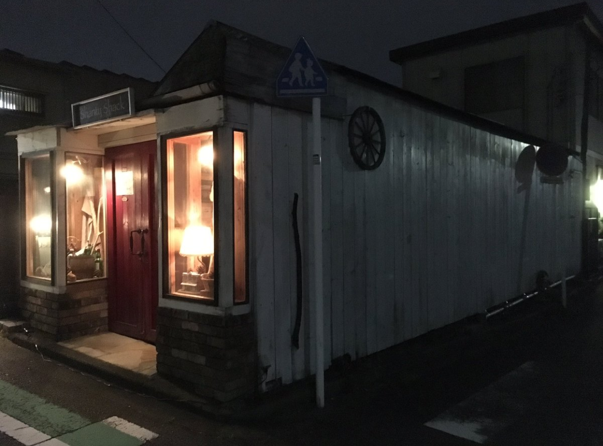

<section class="top-cover-section">
  <article>
    <div class="top-img-div">
      <!--  -->
      <ngb-carousel *ngIf="images">
        <ng-template ngbSlide>
          <div class="picsum-img-wrapper">
            <a routerLink="../feature">
              
            </a>
          </div>
          <div class="carousel-caption">
            <h3>FEATURE</h3>
            <p>ウイスキーへのこだわり</p>
          </div>
        </ng-template>
        <ng-template ngbSlide>
          <div class="picsum-img-wrapper">
            <a routerLink="../menu">
              
            </a>
          </div>
          <div class="carousel-caption">
            <h3>MENU</h3>
            <p>ShantyShackで楽しめるウイスキーたち</p>
          </div>
        </ng-template>
        <ng-template ngbSlide>
          <div class="picsum-img-wrapper">
            <a routerLink="../introduction">
              
            </a>
          </div>
          <div class="carousel-caption">
            <h3>INTRODUCTION</h3>
            <p>バーテンダー紹介</p>
          </div>
        </ng-template>
      </ngb-carousel>
    </div>
  </article>
</section>
<section class="information">
  <p>
    最新の営業情報は公式instagramをご参照ください（メニューバーから遷移できます）<br />2022/1/1現在
  </p>
</section>
<section class="toppage-sections">
  <app-top-news></app-top-news>
</section>
<!-- <section class="toppage-sections">
  <app-top-menu></app-top-menu>
</section> -->
